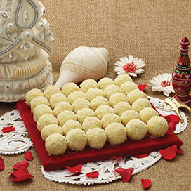

Sweet Bengal Delightful Dishes
Dry Fruits Sondesh

Jalbhora

Kaju Katli

Kheer Kodom
Whatever be their description, Bengali sweets are adored by connoisseurs of taste. So why not share their heavenly taste with the wider world outside Bengal? Whether it is a wedding or an anniversary, birthday party or a festival, we have a sweet for every occasion. A wide and delectable range of sweets like Sondesh, Kheer Kodom, Chomchom, Rosogolla, Baked Mihidana, Mishti Doi, Dry Fruit Mishti along with snacks like Koraishutir Kochuri and Luchi Aloor Dom quickly established Sweet Bengal as the favourite destination for Bengali sweets and savouries in Mumbai. Created by Bengal's finest master craftsmen, Sweet Bengal's legacy dates back in 1995. Since then every delicacy created has brought in a special and unique taste along with the heritage of Calcutta's historic nuances. Indulge yourself in this sweet journey which will take you along the Maidan as you hear the faint tune from a Tagore's song or letting the words of a Pablo Neruda weave magic in your head. With over 22 outlets in Mumbai with a centralized confection factory, it is the most sought after and awarded destination for connoisseurs with a sweet tooth. It has been a satisfying and soulful journey in making your moments sweet and special.
Dry Fruits Sondesh
Jalbhora
Kaju Katli
Kheer Kodom